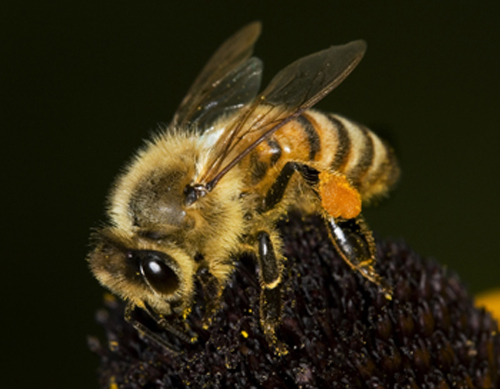

Honey Bee (Apis mellifera)

A European honey bee (note pollen basket on hind leg)
The European honey bee has long been the pollinator of choice for agricultural pollination. Modern cropping systems that consist of large monocultures of insect-pollinated plants would not be possible without the use of mobile honey bee hives.

Honey bee on an apricot blossom (photo © Max Westby)
Using bees to pollinate crops disrupts the regular life cycle of the colony. Colonies used extensively in pollination contracts can suffer from disturbance-related stress and poor nutrition. Both problems have been identified as contributing factors in recent declines in honey bee health and abundance.

Hives secured on a truck for transport
Honey bees are unusual among temperate zone pollinators in that the queen can live for several years, and the entire colony survives the winter. Honey bees collect nectar from flowers and process it into honey to meet their carbohydrate needs. They collect pollen as a protein source. Both pollen and honey are stored in hives in the winter.
During the winter, a healthy colony keeps itself warm by metabolizing stored honey. In spring, the colony is ready to go and can begin pollinating right away, provided that the weather is suitable. Honey bees are not effective foragers at temperatures below about 15C, which is an important factor to consider for crops that require pollination early in the season.
The honey bee queen begins to produce young (brood) in late winter before new sources of pollen are available. During this time the colony requires a large amount of pollen as a protein source to enable nurse bees to produce royal jelly to feed the brood. If not enough pollen has been stored, a supplemental feed or pollen substitute may be provided by the beekeeper (e.g., FeedBee or BeePro). Honey stores are also important at this time, and beekeepers routinely feed sugar syrup to their colonies to supplement dwindling honey supplies in the colony. This helps to ensure a healthy and abundant workforce for even the earliest-blooming crops.

A newly emerged worker bee emerging from her cell (photo © Max Westby)
As the season proceeds, the colony continues to require pollen and nectar. In the fall, brood production drops and the pollen requirements of the colony decrease, but the nectar (carbohydrate) requirements grow as the colony builds its honey stores for the next winter. Providing sugar syrup as a nectar substitute can increase pollination efficiency of a hive, because it encourages foragers to collect pollen instead of nectar. This strategy should be used carefully, however, as nectar can contain essential vitamins and minerals that are important to the bees’ nutrition.

Nectar and pollen stores in a honey bee hive (photo © Max Westby)
The recommended hive rental fee for honey bees in Ontario in 2011 was $70 per hive for spring pollination, and $120 per hive for summer pollination. These prices may vary from year to year, depending on demand for pollination services and the number of colonies available.
Click here for more information on Beekeepers and Growers Associations.
References
Manning, R., Sakai, H., & Eaton, L. 2010. Methods and modifications to enhance the abundance of pollen on forager honey bees (Apis mellifera L.) exiting from beehives: implications for contract pollination services. Australian Journal of Entomology 49:278-285.
Ontario Beekeepers Association, http://www.ontariobee.com/index.php?action=display&cat=17
Robinson, W.S., Nowogrodzki, R., & Morse, R.A. 1989. The value of honey bees as pollinators of U.S. crops. American Bee Journal 477-487.
For more detailed information and references, download the following: Woodcock, T.S. 2012. Pollination in the agricultural landscape: best management practices for crop pollination University of Guelph. 113 pp.